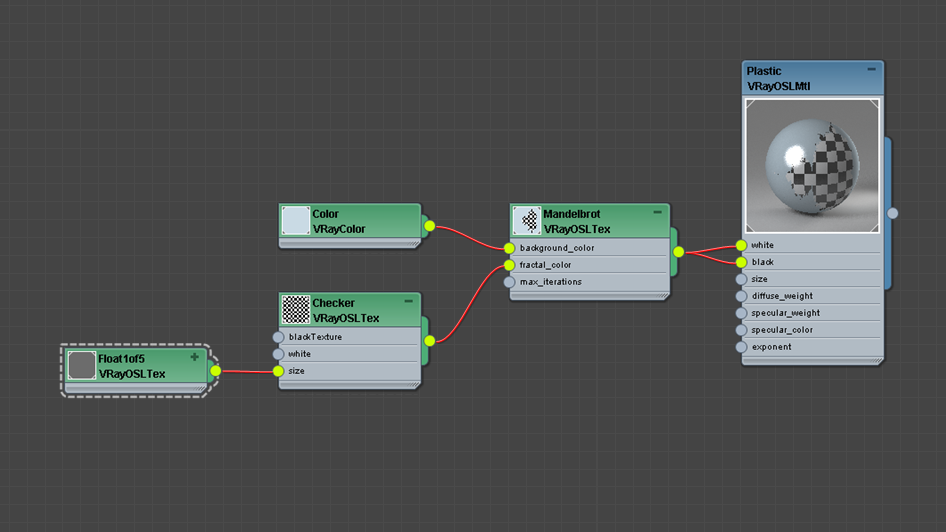

OSL Support
This page provides detailed information on OSL support with V-Ray.
Overview
OSL shaders describe the appearance of a surface using symbolic representations called closures instead of explicitly computing color values. V-Ray supports some of the closures introduced by the OSL specification. Additionally V-Ray customizes the usage of OSL closure functions by defining keyword arguments. These arguments reveal additional parameters to better configure V-Ray BRDFs working behind the scenes of the OSL closures. Currently there are several guidelines and limitations to writing an OSL shader in V-Ray. Please read the Guidelines section for specifics before writing OSL shaders in V-Ray. See the Examples section for some samples.
Guidelines
There are several guidelines and limitations to writing an OSL shader in V-Ray.
General Setup
There are two types of OSL shaders supported: surface and shader.
The VRayOSLMtl takes into account only closure color output parameters. All other types of output parameters are ignored.
VRayOSLTex on the other hand ignores closure color output parameters. Writing to the built-in Ci for example is redundant. Use only simple color or float output parameters for texture shaders. All output parameters are considered as optional texture rgb output while all output float and int parameters are considered as optional texture alpha output.
Texture shader example:
shader simple_color_tex( color tex_color = color(0.2, 0.45, 0.9), float tex_alpha = 1.0, output color result = color(0.0, 0.0, 0.0), output float alpha = 1.0){ result = tex_color; alpha = tex_alpha;}
Material shader example:
surface diffuse_material( color diffuse_color = color(0.2, 0.45, 0.9), color transparency_color = color(0.0, 0.0, 0.0)){ Ci = (1.0 - transparency_color) * diffuse_color * diffuse(N) + transparency_color * transparent();}
Implementation Specifics
Coordinate systems supported: "object", "world", "camera". The default coordinate system ("common") is "world".
The default UI control type for string parameters in 3ds Max is a texture map button. If you need a text field instead use the "widget" parameter metadata.
string filter = "box" [[ string widget = "string" ]],
The default UI control type for integer parameters in 3ds Max is a spinner. If your integer parameter is intended to be a boolean switch use the "widget" parameter metadata.
int trace_reflection = 0 [[ string widget = "checkBox" ]],
Supported OSL Closures
Out of the many closure functions that OSL specifies VRay supports the following:
closure color diffuse (normal N);
closure color phong (normal N, float exponent);
closure color oren_nayar (normal N, float sigma);
closure color ward (normal N, vector T, float xrough, float yrough);
closure color reflection (normal N);
closure colorreflection (normal N, float eta);
closure color refraction (normal N, float eta);
closure colortransparent ();
closure color emission ();
closure color background ();
closure color microfacet(string distribution, normal N, float roughness, float eta);
Additionally we define:
closure color vray_blinn (normal N, float glossiness, float anisotropy, float anisoRotation);
Closure that can be used to create Blinn highlight/reflections for a surface.
closure color vray_cooktorrance (normal N, float glossiness);
Closure that can be used to create Cook-Torrance specular highlights for a surface.
closure color vray_light (int doubleSided, int emitOnBackSide);
Use the light closure function to convert simple color results to closure colors writable to Ci. This can be helpful when you are developing a simple material shader that has no closure output result but still it is necessary to use the material as an input to the VRayBlendMtl. It is equivalent to calling M_PI * emission().
closure color vray_hair(normal N, color diffuse_color, color transparency, color primary_specular_color, float primary_glossiness, float secondary_glossiness, color transmission_color, float transmission_glossiness_length, float transmission_glossiness_width);
Closure that is primarily designed for rendering hair and fur. See VRayHairMtl for in depth parameter explanation and examples. An OSL shader that simulates the VRayHairMtl is available in the Examples section. This shader also demonstrates how the VRayHairMtl's parameters translate to the vray_hair closure ones.
Additional Closure Arguments
The OSL closure functions allow for additional customization via keyword arguments. Listed below are the V-Ray specific keyword arguments for some of the supported closures.
closure color diffuse (normal N);
float roughness;
Keyword usage example:
Ci = diffuse_color * diffuse(N, "roughness", 0.5);closure color phong (normal N, float exponent);
float reflection_glossiness;
float soften_edge;
int subdivs;
int trace_reflections;
closure color ward (normal N, vector T, float ax, float ay);
float highlight_glossiness ;
float anisotropy;
float aniso_rotation;
float reflection_glossiness;
float soften_edge;
int subdivs;
int trace_reflections;
closure color refraction (normal N, float eta);
float glossiness;
int subdivs;
int auto;
closure color vray_blinn (normal N, float glossiness, float anisotropy, float anisoRotation);
float reflection_glossiness;
float soften_edge;
int subdivs;
int trace_reflections;
closure color vray_cooktorrance (normal N, float glossiness);
float anisotropy;
float aniso_rotation;
float reflection_glossiness;
float soften_edge;
int subdivs;
int trace_reflections;
closure color microfacet (string distribution, normal N, float roughness, float eta);
float highlight_glossiness;
float anisotropy;
float aniso_rotation;
float reflection_glossiness;
float soften_edge;
int subdivs;
int trace_reflections;
float gtr_gamma;
closure color vray_hair(normal N, color diffuse_color, color transparency, color primary_specular_color, float primary_glossiness, float secondary_glossiness, color transmission_color, float transmission_glossiness_length, float transmission_glossiness_width);
color secondary_specular_color;
int opaque_for_shadows;
int opaque_for_gi;
int simplify_for_gi;
int use_cached_gi;
float light_multiplier;
vector hair_direction;
Additional argument information:
float roughness;
Controls surface roughness. Ranges from 0.0 to 1.0. Use 0.0 for regular diffuse surface. Increase the value to achieve flat or dusty effect. Default value is 0.0.
float highlight_glossiness;
Controls the shape of the highlight on the material. Ranges from 0.0 to 1.0. Larger values create more specular surface.
float reflection_glossiness;
Controls the sharpness of reflections. Ranges from 0.0 to 1.0. Use 1.0 for perfect mirror-like reflection. Default value is locked to highlight_glossiness.
float anisotropy;
Determines the shape of the highlight. Use this to simulate "brushed" surfaces. Ranges from -1.0 to 1.0 (exclusive). A value of 0.0 means isotropic highlights. Negative values stretch the highlight vertically while positive ones horizontally.
float aniso_rotation;
Determines the orientation of the anisotropic effect in degrees (rotation in degrees). Default value is 0.0.
float soften_edge;
Softens the transition from dark to bright areas in specular reflections. Ranges from -1.0 to 1.0. Default value is 0.001.
int subdivs;
Controls the noise quality of glossy surfaces. Larger number means less noise but longer render time. Default value is 8.
int trace_reflections;
Use 1 to enable reflections or 0 to disable them. Default value is 0.
int auto;
Use a value of 1 to allow V-Ray to take care of backface hits of refractive surfaces. Exit eta corrections and total internal reflections are done automatically. Default value is 0.
float gtr_gamma;
The gamma parameter of the Generalized-Trowbridge-Reitz (GTR) model. Default value is 2.0. At this value the GTR model behaves exactly as the GGX model.
color secondary_specular_color;
The color of the secondary specular component corresponding to light that is reflected off the back surface of the hair strands. The default value is locked to the transmission_color parameter of the vary_hair closure. See VRayHairMtl for more information.
int opaque_for_shadows;
If set to 1 makes the hair closure opaque for shadow calculations. Default value is 0. See VRayHairMtl for more information.
int opaque_for_gi;
Use a value of 1 to make the hair material opaque for GI calculations. Default value is 0. See VRayHairMtl for more information.
int simplify_for_gi;
Use 1 to apply a simplified diffuse version of the closure for GI calculations. Default value is 0. See VRayHairMtl for more information.
int use_cached_gi;
If set to 1, an irradiance map will be used to approximate diffuse indirect illumination. Otherwise the hair closure will always be calculated with brute force GI. Default value is 1. See VRayHairMtl for more information.
float light_multiplier;
A multiplier for the effect of direct illumination on the current hair closure. Default value is 1.0. See VRayHairMtl for more information.
vector hair_direction;
If provided, overrides the internally derived hair strand direction. Default value is vector(0.0, 0.0, 1.0).
Unsupported OSL Features
Displacement and volume shaders are not supported.
Matrices, structures and closures are not allowed as input parameters for the 3ds Max plugin. The Standalone plugin does not accept only closure parameters.
Shader metadata items: page, digits, slider and units are currently ignored.
"NDC" coordinate space is not supported.
The displacement functions displace and bump have no effect.
Printing and file writing string functions such as: printf, error, warning, fprintf.
The texture functions texture3d, pointcloud_search, pointcloud_get, pointcloud_write are not implemented.
Volumetric and signaling closures are not available.
Some surface closures are not yet supported: microfacet_beckmann, microfacet_beckmann_refraction, microfacet_ggx_refraction, translucent.
Renderer state, message passing and dictionary lookups are currently not supported.
Shader Graphs
OSL shaders can be organized into networks of shaders (sometimes called a shader group, graph, or DAG), with named outputs of some nodes being connected to named inputs of other nodes within the network. Furthermore, the individual nodes are evaluated lazily, only their outputs are ”pulled” from the later nodes that depend on them.

Examples
Example: Mandelbrot Texture
This example generates a simple Mandelbrot set using texture coordinates.

Rendered shader
Shader parameters
Shader source code:
File: mandelbrot.osl
shadermandelbrot( color background_color = color(1.0), color fractal_color = color(0.0), int max_iterations = 40, output color result = fractal_color){ float x0 = (u * 3.5) - 2.5; float y0 = (v * 2.0) - 1.0; float x = 0.0; float y = 0.0; int iteration = 0; while ((x * x + y * y < 2.0 * 2.0) && (iteration < max_iterations)) { float xtemp = x * x - y * y + x0; y = 2.0 * x * y + y0; x = xtemp; iteration = iteration + 1; } if (x * x + y * y >= 2.0 * 2.0) { result = background_color; }}
Example: Glass
This example presents a glass material.

Rendered shader
Shader parameters
Shader source code:
File: vray_glass.osl
surfacevray_glass( float eta = 1.44){ Ci = reflection(N, eta) + refraction(N, eta, "auto", 1);}
Example: Plastic
This example demonstrates a plastic material.
Rendered shader
Shader parameters
Shader source code:
File: plastic.osl
surfaceplastic( color white = 1, color black = 0, float size = 0.5, float diffuse_weight = 0.8, float specular_weight = 0.16, color specular_color = 1, float exponent = 80.0){ float uPosition = (mod(abs(u), size) / size); float vPosition = (mod(abs(v), size) / size); color checkerValue = mix(black, white, ((uPosition < 0.5) == (vPosition < 0.5)) ? 1.0 : 0.0); closure color diffuse_component = diffuse_weight * checkerValue * diffuse(N); closure color specular_component = specular_weight * specular_color * phong(N, exponent, "trace_reflections", 1); Ci = diffuse_component + specular_component;}
Example: Carbon Fiber
This shader implements a carbon fiber surface.

Rendered shader

Shader parameters
Shader source code:
File: carbon.osl
normal getBumpedNormal(color centerColor, color uColor, color vColor, float bumpAmount){ vector worldTangent = normalize(dPdu); vector worldBitangent = normalize(dPdv); vector worldNormal = normalize(N); vector average = vector(0.3333333); float center = dot(average, vector(centerColor)); float ddu = center - dot(average, vector(uColor)); float ddv = center - dot(average, vector(vColor)); float inverseBumpAmount = 1.0 / bumpAmount; return normalize(ddu * worldTangent + ddv * worldBitangent + inverseBumpAmount * worldNormal);} surfacecarbon [[ string description = "Carbon fiber material" ]]( string diffuse_texture = "diffuse.png", string specular_texture = "spec.png", string aniso_texture = "aniso.png", string bump_texture = "bump.png", float diffuse_weight = 0.5, float specular_weight = 0.2, float specular_glossiness = 0.75, float bump_amount = 1.0, float delta = 0.004 ){ color diffuseColor = texture(diffuse_texture, u, v); color specularColor = texture(specular_texture, u, v); vector average = vector(0.3333333); color anisoColor = texture(aniso_texture, u, v); float anisotropy = 2.0 * dot(average, vector(anisoColor)) - 1.0; color center = texture(bump_texture, u, v); color uColor = texture(bump_texture, u + delta, v); color vColor = texture(bump_texture, u, v + delta); normal bumpNormal = getBumpedNormal(center, uColor, vColor, bump_amount); Ci = diffuse_weight * diffuseColor * diffuse(bumpNormal) + specular_weight * specularColor * ward(bumpNormal, dPdu, specular_glossiness, specular_glossiness, "anisotropy", anisotropy);}
Example: Car Paint
This shader simulates car paint material.
Rendered shader
Shader parameters
Shader source code:
File: car_paint.osl
surfacecar_paint [[ string description = "Car paint material" ]]( color baseColor1 = color(0.08, 0.08, 0.77), color baseColor2 = color(0.46, 0.46, 0.82), color specularColor = color(0.87, 0.87, 1.0), float diffuseWeight = 0.6, float specularWeight = 0.3, float specularGlossiness = 0.5, float reflectionWeight = 0.4, float baseFalloffAmount = 0.4, float flakeSpread = 0.6){ float cosNI = dot(N, -I); float baseBlendFactor = pow(cosNI, 1.0 / baseFalloffAmount); color diffuseColor = mix(baseColor1, baseColor2, baseBlendFactor); color reflectionColor = color(reflectionWeight * (1.0 - cosNI)); normal n = hashnoise(u, v) * 2.0 - 1.0; float cosFlake = dot(n, -I); if(cosFlake < 0.0) { cosFlake = -cosFlake; n = -n; } n = normalize(N + flakeSpread * n); Ci = diffuseWeight * diffuseColor * diffuse(N) + specularWeight * specularColor * vray_blinn(n, specularGlossiness, 0.0, 0.0) + reflectionColor * reflection(N);}
Example: Hair Material
This shader demonstrates how to use the vray_hair closure.
Rendered shader
Shader parameters
Shader source code:
File: vray_hair_material.osl
surface vray_hair_material [[ string description = "V-Ray Hair Material" ]]( // General parameters color overall_multiplier = color(0.9), color opacity = color(1.0), // Diffuse color diffuse_color = color(0.0), float diffuse_amount = 1.0, // Primary specular color primary_specular_color = color(0.05), float primary_specular_amount = 0.25, float primary_glossiness = 0.9, // Secondary specular int lock_to_transmission = 1 [[ string widget = "checkBox" ]], color secondary_specular_color = color(0.36, 0.3, 0.15), float secondary_specular_amount = 1.0, float secondary_glossiness = 0.8, // Transmission color transmission_color = color(0.6, 0.55, 0.4), float transmission_amount = 1.0, float transmission_glossiness_length = 0.95, float transmission_glossiness_width = 0.85, // Options int opaque_for_shadows = 0 [[ string widget = "checkBox" ]], int opaque_for_gi = 0 [[ string widget = "checkBox" ]], int simplify_for_gi = 1 [[ string widget = "checkBox" ]], int use_cached_gi = 1 [[ string widget = "checkBox" ]], // Advanced float light_multiplier = 1.0){ color transparency_color = clamp(1.0 - opacity, 0.0, 1.0); if (lock_to_transmission) { Ci = overall_multiplier * vray_hair( N, diffuse_amount * diffuse_color, transparency_color, primary_specular_amount * primary_specular_color, primary_glossiness, secondary_glossiness, transmission_amount * transmission_color, transmission_glossiness_length, transmission_glossiness_width, "opaque_for_shadows", opaque_for_shadows, "opaque_for_gi", opaque_for_gi, "simplify_for_gi", simplify_for_gi, "use_cached_gi", use_cached_gi, "light_multiplier", light_multiplier ); } else { Ci = overall_multiplier * vray_hair( N, diffuse_amount * diffuse_color, transparency_color, primary_specular_amount * primary_specular_color, primary_glossiness, secondary_glossiness, transmission_amount * transmission_color, transmission_glossiness_length, transmission_glossiness_width, "secondary_specular_color", secondary_specular_amount * secondary_specular_color, "opaque_for_shadows", opaque_for_shadows, "opaque_for_gi", opaque_for_gi, "simplify_for_gi", simplify_for_gi, "use_cached_gi", use_cached_gi, "light_multiplier", light_multiplier ); }}
Notes
-
Open Shading Language specification officially supported is 1.10.
-
These features are available only for V-Ray Standalone and V-Ray for 3ds Max 2011 and later.
-
An OSL compiler that translates *.osl files to *.oso files can be found in the tools sub-directory of V-Ray's root installation folder
References
-
OSL home page at SPI – Open Shading Language home page at Sony Pictures Imageworks
-
OSL Google Code page – Google Code project page for Open Shading Language
-
OSL GitHub page – GitHub project page for Open Shading Language